LLM Online Loss Sweep
Deploy accuracy and ADMM residual tradeoffs for alternative online penalty losses.
Llm Loss Deploy Rel Error Bar
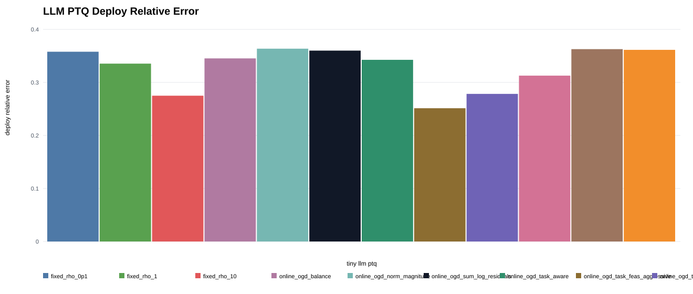
Llm Loss Final Primal Bar
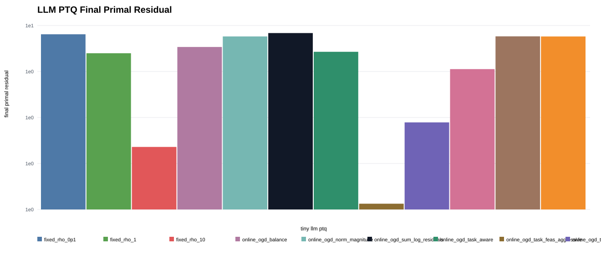
Llm Loss Final Dual Bar
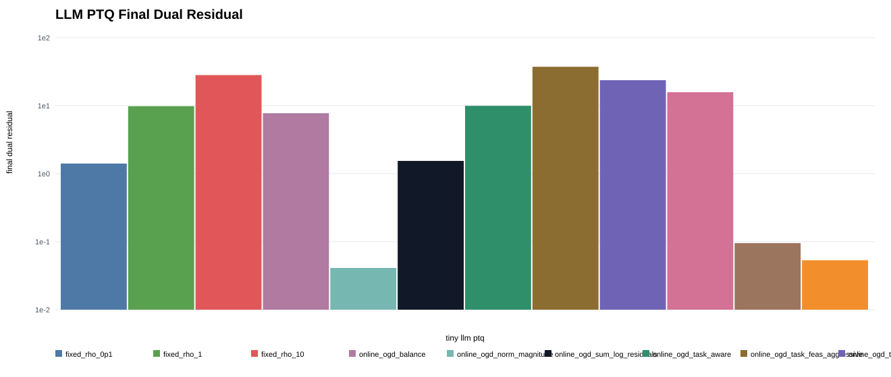
Llm Loss Final Residual Max Bar
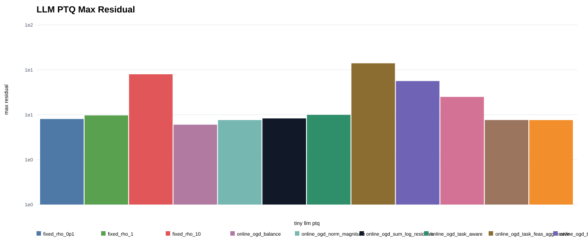
Llm Loss Log Residual Auc Bar
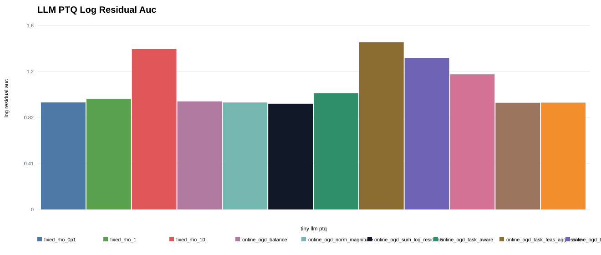
Llm Loss Final Rho Bar
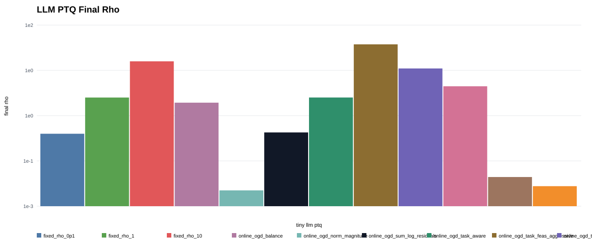
Llm Loss Tradeoff Final Residual Max Vs Deploy
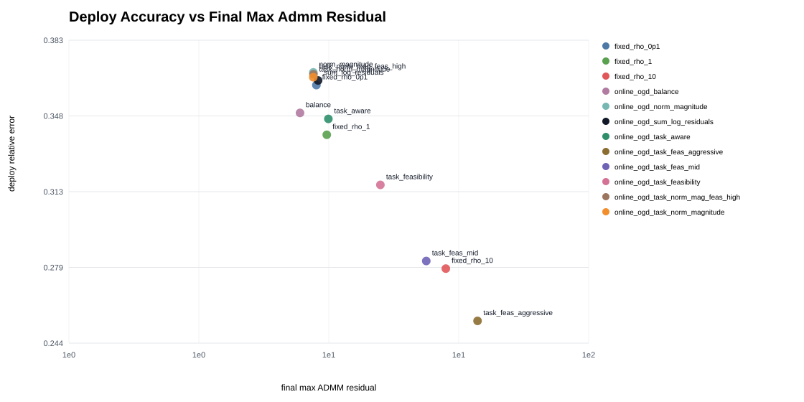
Llm Loss Tradeoff Final Primal Vs Deploy
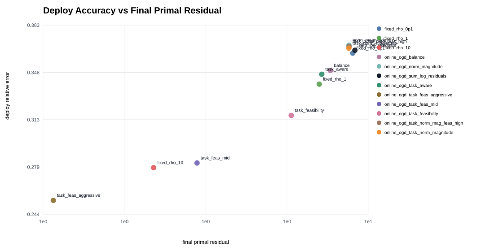
Llm Loss Tradeoff Log Residual Auc Vs Deploy
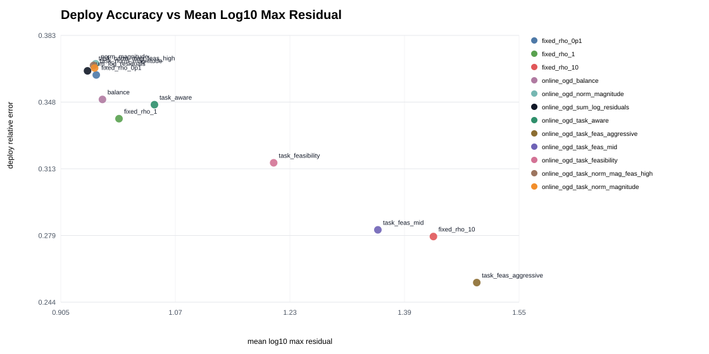
Llm Loss Deploy Rel Error Seed0
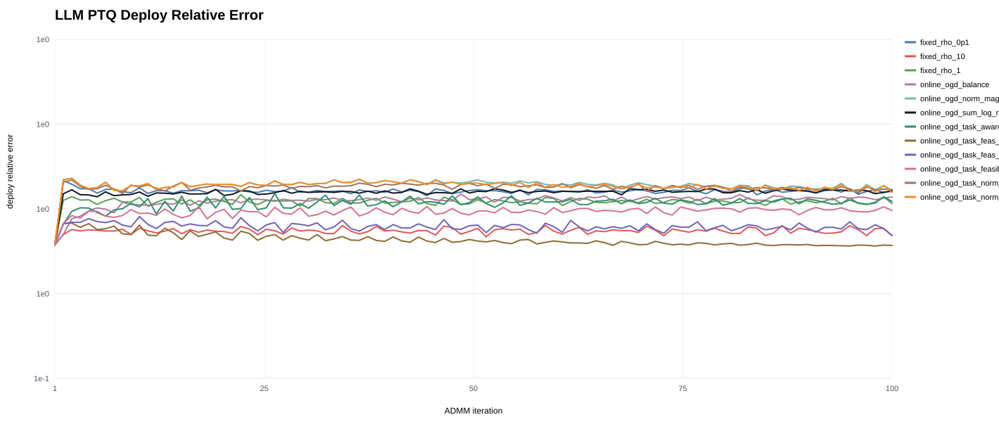
Llm Loss Primal Norm Seed0
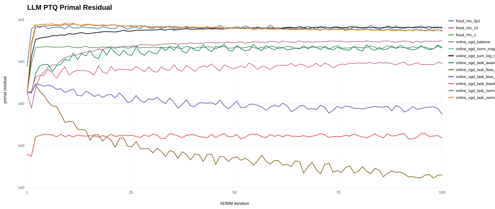
Llm Loss Dual Norm Seed0
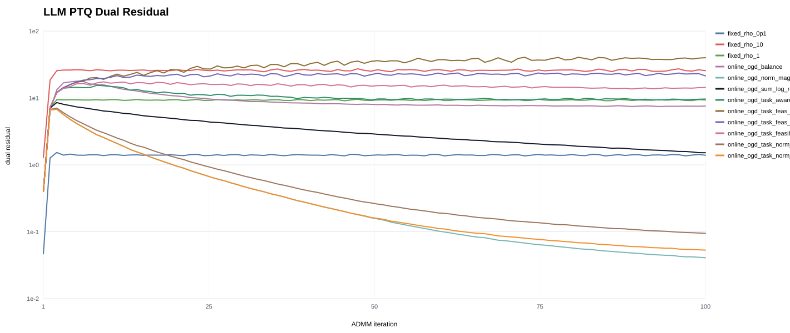
Llm Loss Rho Seed0
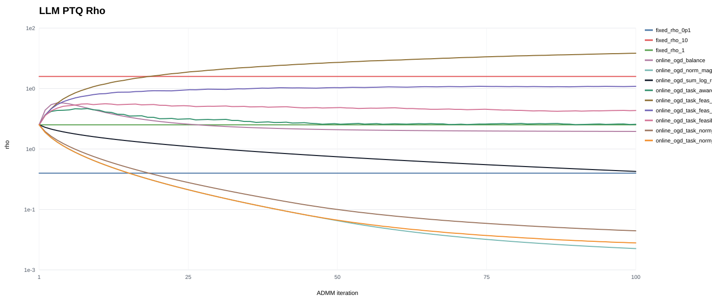
Mean Metrics
| method | deploy_rel_error | final_primal | final_dual | final_residual_max | log_residual_auc | final_rho |
|---|---|---|---|---|---|---|
| online_ogd_task_feas_aggressive | 0.254 | 1.075 | 37.367 | 37.367 | 1.491 | 29.425 |
| fixed_rho_10 | 0.278 | 2.187 | 28.211 | 28.211 | 1.430 | 10.000 |
| online_ogd_task_feas_mid | 0.282 | 2.974 | 23.721 | 23.721 | 1.352 | 6.352 |
| online_ogd_task_feasibility | 0.316 | 5.794 | 15.797 | 15.797 | 1.205 | 2.048 |
| fixed_rho_1 | 0.339 | 7.067 | 9.824 | 9.824 | 0.987 | 1.000 |
| online_ogd_task_aware | 0.347 | 7.196 | 9.963 | 9.963 | 1.037 | 1.002 |
| online_ogd_balance | 0.349 | 7.643 | 7.750 | 7.750 | 0.964 | 0.721 |
| fixed_rho_0p1 | 0.362 | 8.961 | 1.409 | 8.961 | 0.955 | 0.100 |
| online_ogd_sum_log_residuals | 0.364 | 9.097 | 1.542 | 9.097 | 0.943 | 0.109 |
| online_ogd_task_norm_magnitude | 0.366 | 8.717 | 0.053 | 8.717 | 0.953 | 0.00357 |
| online_ogd_task_norm_mag_feas_high | 0.367 | 8.731 | 0.095 | 8.731 | 0.951 | 0.00638 |
| online_ogd_norm_magnitude | 0.368 | 8.720 | 0.041 | 8.720 | 0.954 | 0.00273 |